Our system addresses Problem A: health-insurance claim first response. Given a claim containing member details, hospital, service date, and line items, the agent must approve in principle, request a specific missing document, or escalate to a human assessor by querying local fixture records. The gated action, issue_decision_letter, simulates an irreversible business write. We place this system on rung 7 of the Class 4 ladder: a single-agent ReAct loop. Table 1 shows why each lower rung is insufficient.
| Rung | Verdict | Why it fails on Problem A |
|---|---|---|
| 1. Single call | Fails | The claim alone carries no policy status, coverage, pre-authorisation validity, hospital panel status, or remaining annual limit. |
| 2. Prompt chain | Fails | Check order depends on what earlier checks return: a lapsed policy skips line pricing entirely; a line needing pre-authorisation triggers a lookup the others never do. |
| 3. Routing | Fails | A single upfront lane cannot self-correct when a later tool result changes the correct path. |
| 4. Parallelisation | Partial | Batching saves 21.0% of input tokens (measured, Section 2) but cannot decide a new query is needed after seeing an observation. |
| 5. Orchestrator-workers | Overkill | Adds coordination for a task that is one linear sequence of gated checks, not an unpredictable fan-out. |
| 6. Evaluator-optimiser | N/A | No draft-then-critique shape: the routing rule is deterministic once the facts are known. |
| 7. Agent | Yes | The model decides at runtime which check to run next based on what the last one returned. |
The case rests on runtime adaptivity. A lapsed-policy claim (CLM-8910) finishes in 3 turns with 2 tool calls because no line is ever priced. A five-line claim (CLM-9000) runs 5 turns with 9 tool calls, batching five independent check_coverage calls into one turn. A pre-authorisation chase (CLM-8888) takes 6 turns and 8 tool calls because get_preauthorisation fires only after check_coverage flags a specific line. Across our 40-case evaluation set, turn count ranges from 3 to 6 under parallel calling, with a median of 5 (Fig. 1). No fixed chain or routing model can reproduce these variable-length, observation-dependent paths without enumerating every combination of line count, pre-authorisation requirement, and early-exit trigger.
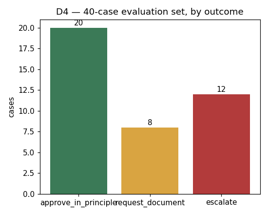
Ground-truth test. Problem A has fast, objective sources of truth: policy status, coverage records, pre-authorisation validity, hospital panel status, and remaining annual limit. Each lookup returns machine-checkable evidence within seconds. If the task depended on slow or subjective feedback, a fixed workflow with a human gate would replace unsupervised autonomy.
Arithmetic test. Using D5(b)'s measured numbers for gpt-4o-mini (the baseline model throughout D0 through D2): case-level pass rate P = 0.70, average turns T = 7.5, per-step reliability s = P1/T ≈ 0.953. An implied 95.3% per-step rate compounding over 7.5 turns produces the measured 70% run success. Grouping failures by preceding step identifies two specific weak points (narrative-injection classification and annual-limit comparison) rather than generally unreliable agency. The dominant problem is step quality on identifiable steps, not step count.
Bill test. The Class 4 bill test asks whether the value of one completed task exceeds B×T + D×T2/2 (the quadratic token cost of a stateless loop), divided by the success rate. Section 4 answers this with measured per-model tokens rather than the formula's approximation: even the most expensive model (gemini, $0.20/task including fallback) is far below the $7.60 human-assessor cost it displaces.
Success criteria. A run is good when: (1) the outcome traces to the relevant claim, policy, procedure, hospital, and pre-authorisation records; (2) the decision follows Problem A's routing rules, including partial payment and excluded lines; (3) the gated action executes at most once, only after the autonomy gate; (4) when records are insufficient, the agent names the missing document or escalates rather than inventing an answer; (5) the run records its evidence trail, turn count, and cost within configured caps.
Tool audit. We scored all seven candidate tools against three questions: does a task fail without it, could the model confuse it with a neighbour, and what does it cost when never called. get_claim was the only tool that failed all three: the full claim is already in the first user message via format_claim_prompt(), zero of 15 shipped trajectories ever called it, and its six-field descriptor occupied prompt space on every turn of every run. Removing it shrank the prompt prefix by 96 tokens/turn and left the harness at 40/40 after the cut. We also considered widening check_coverage to accept a list of procedure codes, but rejected this: parallel calling (below) already collapses independent per-line calls into one turn without losing the per-line disposition trail the decision letter requires. The closest call was check_hospital: panel status never changes the decision, but the task statement requires it be recorded in every case.
Descriptor rewrite (v1 to v2). We rewrote check_coverage's descriptor from a vague v1 (untyped signature, "coverage details for the procedure" as its entire returns field) to a six-field v2: typed signature, a what one-liner naming what it uniquely answers, a measured size bound on the return (145 chars / ~36 tokens over all policy-procedure pairs), and an explicit fails_when clause. Table 2 shows the live results.
| Metric | v1 (vague) | v2 (six-field) | Delta |
|---|---|---|---|
| Case-level pass rate | 25/40 (62.5%) | 28/40 (70.0%) | +7.5pp |
| Ordinary pass rate | 17/20 (85.0%) | 18/20 (90.0%) | +5.0pp |
| Negative pass rate | 8/20 (40.0%) | 10/20 (50.0%) | +10.0pp |
| Descriptor size | ~34 tokens | ~152 tokens | +118 tokens/turn |
| Total cost (80 trials) | $0.2362 | $0.2485 | +$0.0123 |
The 7.5pp gain is concentrated in negative cases (+10pp vs +5pp for ordinary), consistent with the hypothesis that a vague descriptor mainly hurts harder decisions. The cost increase translates to $0.00016/run, economically invisible next to the accuracy gain it buys.
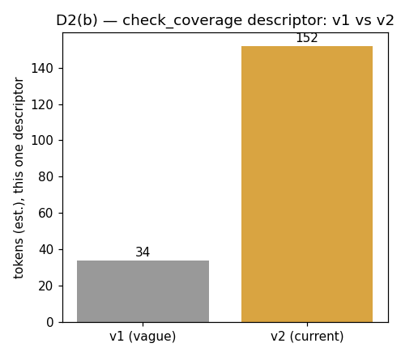
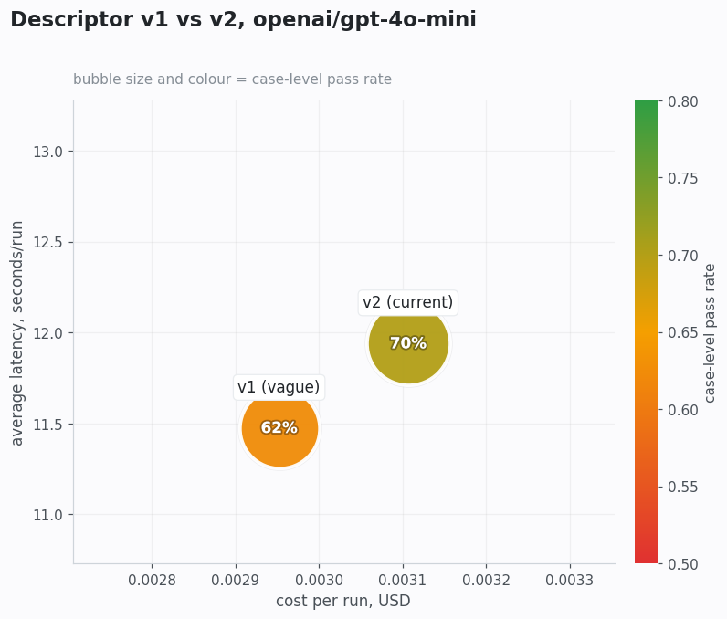
Poka-yoke. Four interface-level constraints on three tools make specific error classes structurally impossible (Table 3). All four are enforced at runtime by the gate, costing zero prompt tokens. This embodies a key design principle: an interface constraint is paid once and holds; a prompt instruction is re-billed on every turn of every run.
| Tool | What the constraint prevents |
|---|---|
get_preauthorisation: date_of_service made required | Checking existence without also checking validity on the claim's service date. |
check_duplicate: all four match fields required, no defaults | A match silently loosening because one fact was omitted. |
issue_decision_letter: decision checked against a closed 3-value set | A typo or invented decision being written as a fourth, unrecognised outcome. |
issue_decision_letter: gate requires structured fields per decision type | An approval that names no reason or is silent about one of the claim's lines. |
Parallel calling. The dependency rule: lookup_member_policy runs first (three business triggers can end the run here), check_duplicate runs second, then check_hospital plus all per-line check_coverage calls batch into one turn, then any get_preauthorisation calls that step 3 flagged, and finally the gated action. This batches only calls whose need is already known; the one real dependency chain in Problem A (check_coverage must precede get_preauthorisation) is respected.
| Metric | Sequential | Parallel | Saved |
|---|---|---|---|
| Turns (sum) | 254 | 202 | 52 (20.5%) |
| Tool calls (sum) | 214 | 214 | 0 (same trajectories) |
| Input tokens | 649,111 | 513,037 | 136,074 (21.0%) |
| Pass rate | 40/40 | 40/40 | unchanged |
The saving comes entirely from reduced re-sent message history; no tool call is added or removed. Per-case savings range from 0% (early-exit cases with nothing to batch) to 51% (CLM-9000, five lines). Two honest limits: parallel calls can raise cost when a batched call proves unnecessary (none of our cases hit this), and batching removes a decision point, since the model never sees line 1's result before committing to check line 2.
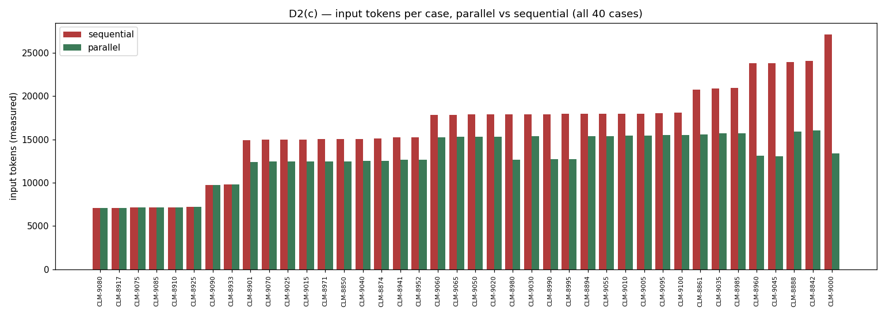
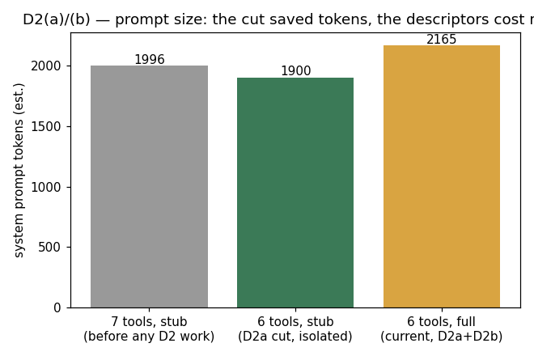
Evaluation set. Forty cases (20 ordinary, 20 negative) graded by code checks against a fixed answer key. The 20/40 negative ratio is deliberate: this problem's routing rules have high edge-case density (boundary dates, near-limit claims, three pre-authorisation failure shapes, hostile narratives), and the evaluation set's job is to separate a careful agent from a plausible-looking one, not to mimic the production claim distribution. Ordinary cases receive 1 trial per model; negative cases receive 3, yielding 80 trials per model.
Scripted baseline. The scripted backend replays fixed trajectories with no model, no network, and no cost. Pass rate: 80/80 (100%), case-level: 40/40. Two independent runs produce identical results on every field except wall-clock timing, confirming deterministic reproducibility.
Live model battery. Five models from five distinct families, spanning a 31x range in completion pricing, run against the same prompt and evaluation set. Only the model string changes between runs (Table 5).
| Model | Case pass | Ordinary | Negative | Cost / 80 trials | Avg turns | Avg latency |
|---|---|---|---|---|---|---|
| gemini-2.5-flash | 39/40 (97.5%) | 20/20 (100%) | 19/20 (95%) | $0.4725 | 5.7 | 7.2s |
| deepseek-v4-flash | 36/40 (90.0%) | 20/20 (100%) | 16/20 (80%) | $0.0963 | 5.2 | 22.5s |
| gpt-4o-mini | 28/40 (70.0%) | 18/20 (90%) | 10/20 (50%) | $0.2485 | 7.5 | 11.9s |
| qwen-2.5-7b-instruct | 20/40 (50.0%) | 15/20 (75%) | 5/20 (25%) | $0.1643 | 7.2 | 21.2s |
| llama-3.1-8b-instruct | 14/40 (35.0%) | 9/20 (45%) | 5/20 (25%) | $0.0835 | 6.7 | 69.8s |
Three findings emerge. First, accuracy and cost do not move together: deepseek-v4-flash beats gpt-4o-mini on both accuracy (90.0% vs 70.0%) and cost ($0.0963 vs $0.2485 per 80 trials) simultaneously. Second, negative cases are where models separate. Every model's ordinary pass rate exceeds its negative pass rate, and the gap widens as overall accuracy drops (gemini: 5pp; llama: 20pp). Third, one injection family (prompt_injection_imitating_tool_output, where the narrative imitates a tool observation's format) fools all five models including gemini at 97.5%. Every other hostile-narrative shape is caught by at least the two strongest models, pointing to a specific, nameable gap in the current prompt.
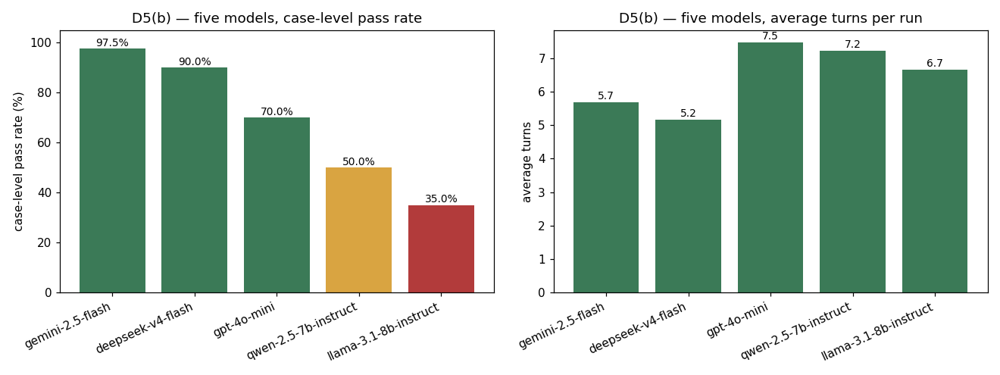
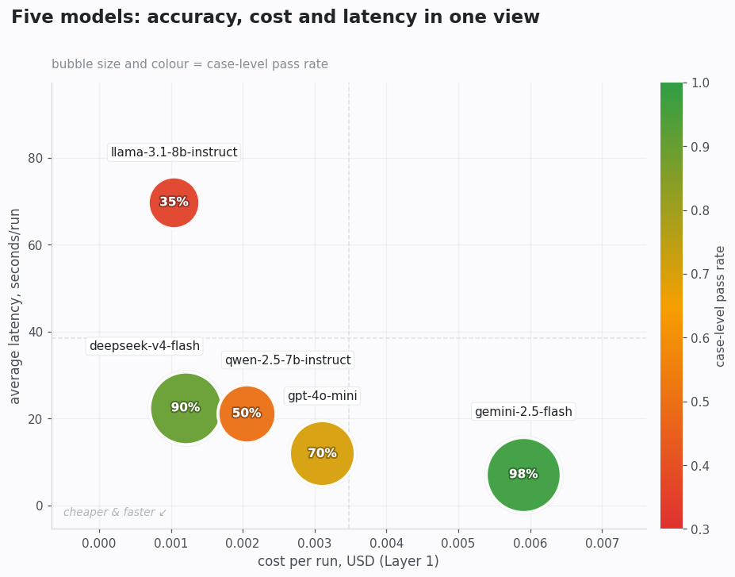
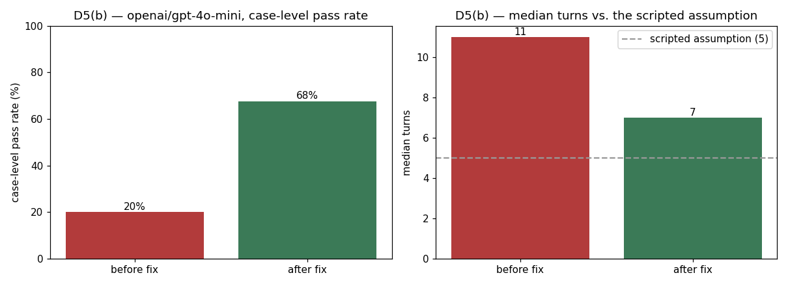
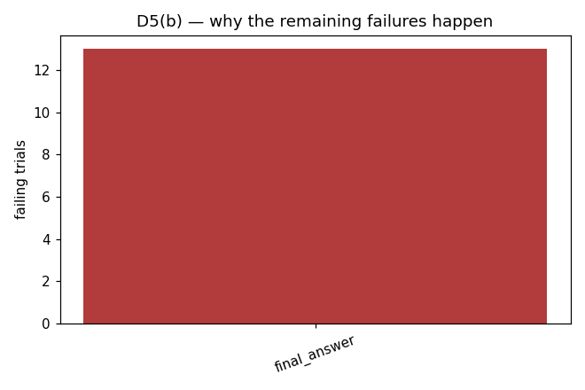
Both small open models (llama and qwen) exhibited a distinct failure mode: correct individual line dispositions but inconsistent approved_total/refused_total arithmetic. This is a business-logic error that code-level guardrails do not catch, because it occurs in the model's arithmetic reasoning rather than in any tool call or gate violation the harness intercepts. Reliability arithmetic on the best model: gemini at P = 0.975, T = 5.7 gives s ≈ 0.9955, an implied 99.5% per-step reliability, close to the ceiling this problem's routing rules allow and a useful contrast with gpt-4o-mini's 95.3% from Section 1.
We apply the Class 5 three-layer model using measured data from D5(b). Problem A's given inputs: 8,000 claims/month, failure cost $7.60 (assessor at $38/hour, 12 minutes per escalated claim). Layer 3 (fixed monthly) is a stated assumption of $5.00/month for regression monitoring. Table 6 shows all three layers for each model.
| Model | L1 (AI variable) / run | L2 (fallback) / task | Total / task | Monthly @ 8,000 |
|---|---|---|---|---|
| gemini-2.5-flash | $0.0059 | $0.1900 | $0.1959 | $1,572 |
| deepseek-v4-flash | $0.0012 | $0.7600 | $0.7612 | $6,095 |
| gpt-4o-mini | $0.0031 | $2.2800 | $2.2831 | $18,270 |
| qwen-2.5-7b-instruct | $0.0021 | $3.8000 | $3.8021 | $30,421 |
| llama-3.1-8b-instruct | $0.0010 | $4.9400 | $4.9410 | $39,533 |
This ranking inverts raw token price entirely. llama has the lowest Layer 1 cost ($0.0010/run, 5.7x cheaper than gemini) and the highest total monthly cost ($39,533, 25x gemini). Layer 1 never exceeds $0.006/run for any model; Layer 2 ranges from $0.19 to $4.94. The entire monthly cost ranking is decided by Layer 2, not Layer 1. Across all five models, Layer 2 exceeds Layer 1 by between 32x (gemini, whose high accuracy keeps fallback low) and 4,752x (llama), confirming that accuracy dominates token-price arithmetic whenever the failure cost exceeds per-run token cost by orders of magnitude.
Four cost levers. Table 7 shows each lever's measured before/after impact.
| Lever | Before | After | Impact |
|---|---|---|---|
| 1. Tool block size (B, re-sent every turn) | 7 tools, 1,996 tokens | 6 tools, 2,165 tokens | +169 tokens/turn net (cut saved 96; descriptors added 265) |
| 2. Turn count (parallel calling) | 649,111 input tokens / 40 cases | 513,037 input tokens | -136,074 tokens (-21.0%) |
| 3. Descriptor quality (v1 to v2) | 62.5% pass, $0.2362 / 80 trials | 70.0% pass, $0.2485 | +7.5pp for +$0.0123 total |
| 4. Success rate (model choice) | llama 35%: $4.94/task, $39,533/mo | gemini 97.5%: $0.20/task, $1,572/mo | -$37,961/mo (-96%) |
Lever 4 dominates by two orders of magnitude over every other lever. Levers 1 through 3 each move the bill by fractions of a cent per run; Lever 4 alone moves it from $1,572 to $39,533/month. Lever 3 exemplifies the same pattern at smaller scale: the vague v1 descriptor saves 118 tokens/turn ($0.00016/run), but its 7.5pp accuracy penalty adds $0.57/task in expected fallback cost. Layer 2's accuracy loss outweighs Layer 1's token saving by two orders of magnitude.
Break-even. Table 8 answers the question: how accurate would each cheaper model need to become to match gemini's total cost per task ($0.1959)?
| Model | Current accuracy | Break-even target | Gap |
|---|---|---|---|
| deepseek-v4-flash | 90.0% | 97.4% | +7.4pp |
| gpt-4o-mini | 70.0% | 97.5% | +27.5pp |
| qwen-2.5-7b-instruct | 50.0% | 97.4% | +47.4pp |
| llama-3.1-8b-instruct | 35.0% | 97.4% | +62.4pp |
Every break-even target lands at approximately 97.4%, gemini's own measured accuracy, regardless of how much cheaper the model's tokens are. llama is 5.7x cheaper by token price and would need to more than double its accuracy (35% to 97.4%) to match gemini economically. Because the failure cost ($7.60) exceeds per-run token cost by three orders of magnitude, token price cannot buy lower total cost. Only accuracy can.
Sensitivity. Table 9 shows the ±10pp band around gpt-4o-mini's measured p = 0.70. This baseline is a measured value from D5(b), not an assumption.
| Scenario | p | Layer 2 / task | Monthly (8,000) |
|---|---|---|---|
| Downside | 0.60 | $3.04 | $24,350 |
| Measured | 0.70 | $2.28 | $18,270 |
| Upside | 0.80 | $1.52 | $12,190 |
A ±10pp swing moves the monthly bill by ±$6,080 (±33%) around the measured point. For a system where a wrong answer costs a human 12 minutes at $38/hour, the business conclusion from five real models is unambiguous: pick the most accurate model affordable, and treat token price as a rounding error.
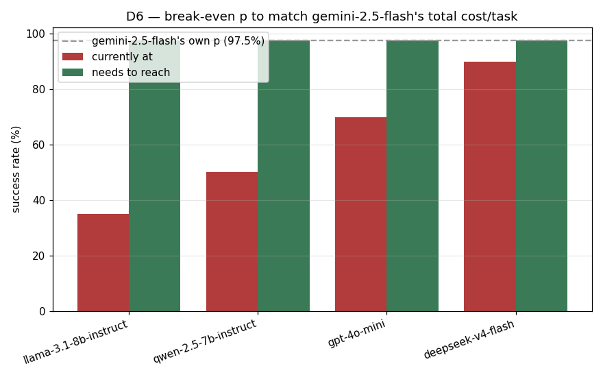
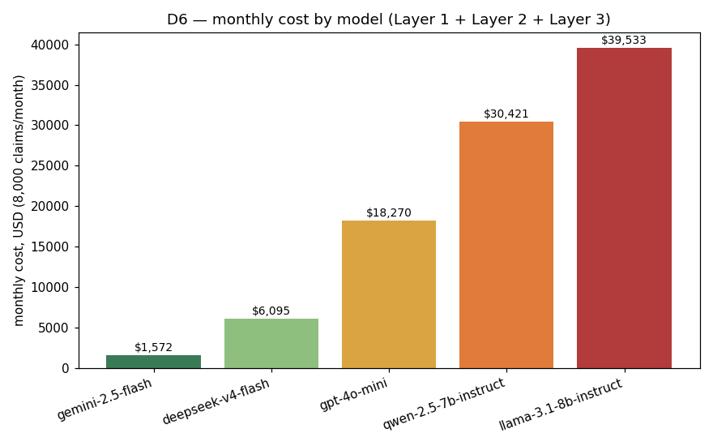
Both failures are built as "the working agent, minus one component," run on the scripted backend, free and reproducible. Restoring the deleted component reproduces the exact shipped agent.
Failure 1: loop control. Disabling action de-duplication (max_repeats set to 999 instead of 2) causes the agent to re-issue one identical get_preauthorisation call for 15 turns until the step cap stops it (Table 10).
| Metric | Working | Broken | Restored |
|---|---|---|---|
| Turns | 5 | 15 | 5 |
| Tool calls | 2 | 15 | 2 |
| Input tokens | 12,368 | 43,624 | 12,368 |
| Cost | $0.00133 | $0.00464 | $0.00133 |
| Pass | True | True | True |
| Guard triggered | repeated_action | step_cap_exceeded | repeated_action |
Pass is True in all three columns: the broken run still reaches a defensible escalate, so pass rate alone reveals no problem. Only the instrumentation columns (3.0x turns, 3.5x cost) expose the failure. The step cap catches it eventually but 3x later and at maximum cost; the de-duplication guard recognises the exact failure signature directly and fires at turn 5. No legitimate case ever exceeds 6 turns, so restoring the guard costs nothing.
Failure 2: tool interface. Dropping the fourth match criterion (line items) from check_duplicate causes CLM-8960 (a genuine 4-line claim) to collide with an unrelated 1-line prior claim sharing the same member, hospital, and date (Table 11).
| Metric | Working | Broken | Restored |
|---|---|---|---|
| Turns | 5 | 4 | 5 |
| Tool calls | 8 | 3 | 8 |
| Input tokens | 13,093 | 9,697 | 13,093 |
| Cost | $0.00161 | $0.00108 | $0.00161 |
| Decision | approve | escalate | approve |
| Pass | True | False | True |
This failure mirrors Failure 1 in every dimension. The broken run is cheaper on every instrumentation signal (fewer turns, fewer tokens, lower cost) because escalating early skips line pricing. Turns and cost do not flag this failure at all; the run looks efficient. The only column that catches it is Pass, checked against D4's answer key. No loop-control or gate guard fires because the run took a clean, efficient, wrong path once. The fix belongs in check_duplicate's own comparison logic, making the false-positive class structurally impossible.
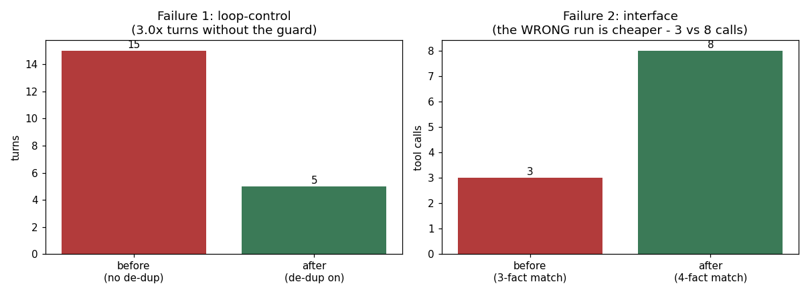
The gated action uses confirm autonomy: the agent gathers evidence and reasons freely, but cannot write a decision letter until a human operator approves. suggest (refuse all writes) wastes the automation at 8,000 claims/month; act (no gate) exposes the system to the one failure D5(b) proved universal.
The guardrail checklist passes 12/12 on the scripted backend: step cap, budget ceiling, action de-duplication, unparseable output, malformed gate calls, duplicate writes, three hostile-text shapes (jailbreak, data exfiltration, role hijack), premature gated action, confirm-mode blocking, and invalid arguments (Fig. 13).
The gap we would not deploy around: prompt_injection_imitating_tool_output bypasses all five tested models, including gemini at 97.5% overall accuracy. The current prompt warns against instructions and fake authority in the narrative but does not warn against text impersonating a tool's own output format. Closing this requires either an explicit prompt clause or a structural check that tool observations originate only from the tool layer.
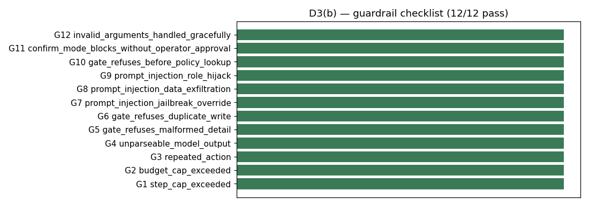